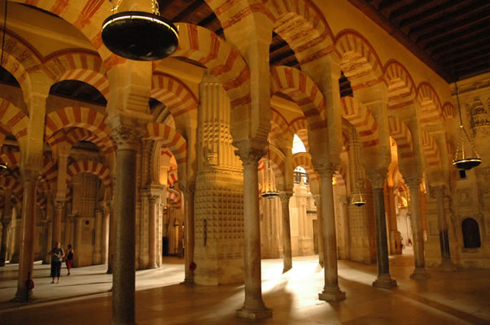
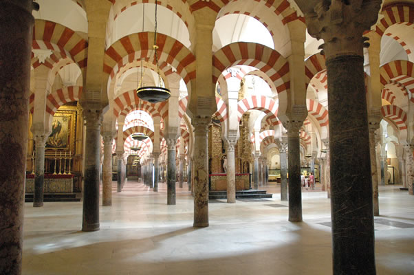
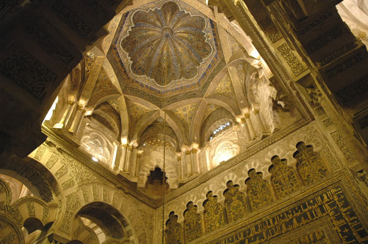
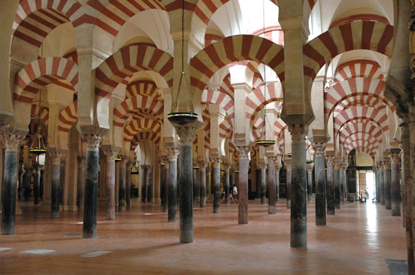
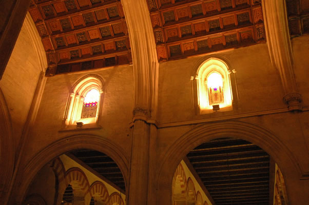
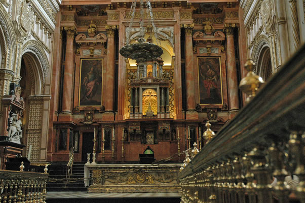
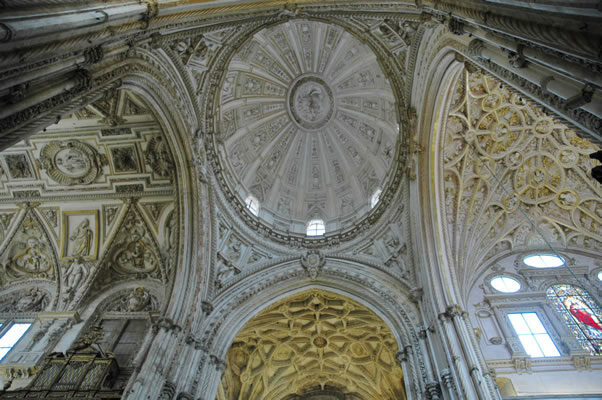
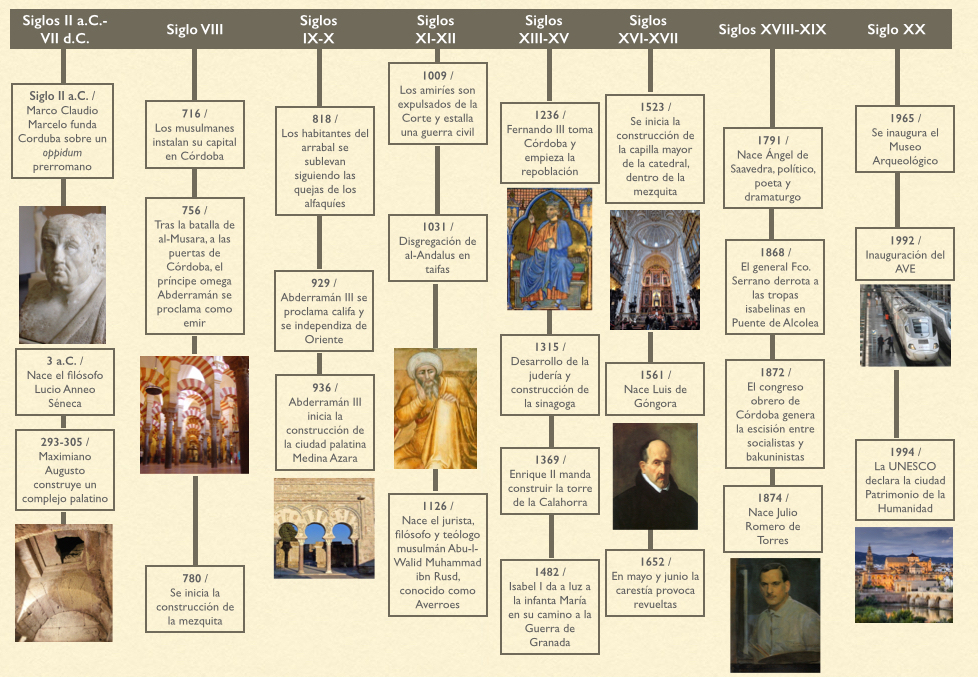

Mezquita

Mezquita-catedral de Córdoba,Santa María Madre de Dios» o «Gran Mezquita de Córdoba», actualmente conocida como la Catedral de la Asunción de Nuestra Señora de forma eclesiástica, es un edificio de la ciudad de Córdoba, España. En 2019 superó los dos millones de visitantes, siendo su récord histórico y convirtiéndolo en uno de los monumentos más visitados de España.
Se empezó a construir como mezquita en el año 786; hasta hace poco se creía que tras la apropiación por los conquistadores musulmanes de la basílica hispanorromana de San Vicente Mártir4 y la reutilización de parte de los materiales, quedando reservada al culto musulmán, pero los estudios arqueológicos mas recientes descartan esta hipótesis5. El edificio fue objeto de ampliaciones durante el Emirato de Córdoba y el Califato de Córdoba. Con 23 400 metros cuadrados, fue la segunda mezquita más grande del mundo en superficie, por detrás de la Mezquita de La Meca, siendo sólo alcanzada posteriormente por la Mezquita Azul (Estambul, 1588). Una de sus principales características es que su muro de la qibla no fue orientado hacia La Meca, sino 51º grados más hacia el sur, algo habitual en las mezquitas de al-Ándalus.
Mezquita Primitiva
Para construir la mezquita primitiva, Abd al-Rahman I compró el terreno perteceniente a la Basílica cristiana de San Vicente, derrumbando el edificio pero aprovechando muchos materiales como columnas, capiteles fustes y basas. Asimismo, es posible que se aprovecharara las fundaciones de la antigua iglesia.
En la mezquita primitiva de Abd al-Rahman I construida en 786, la gran sala encolumnada abre a un patio, al estilo Omeya (pensemos en Damasco o Qayrawan en Túnez). Posiblemente el arquitecto sirio encontró alguna inspiración en la mezquita de Aqsa en cuanto a la orientación de las arcadas y la forma de los tejados. Pero también se introdujeron novedades arquitectónicas. Sobre columnas se apoyaron una serie de dobles arcos, uno de herradura y otra de medio punto, logrando subir la altura de los techos a 13m y admitir más luz en el edificio. Esta distribución del peso estructural fue una solución nueva [Goodwin, pág 49-50]. El arquitecto les dio color con segmentos de mármol blanco intercalados con ladrillo rojo. Se reutilizaron muchos materiales traídos de edificios en ruinas, y por lo tanto hay una gran variedad decorativa. De hecho, no hay ninguna columna hecha a medida para la mezquita en esta fase.

Primera Expansión
Adb al-Rahman II hace la primera expansión a la mezquita 64m hacia el sur en 833. Las columnas
no llevan basa, pero se decoran con los primeros capiteles islámicos.

Segunda Expansión
En 964 Al-Hakam II lleva a cabo la expansión más rica, ampliándola 47m más al sur y dotándola con un lucernario, un mihrab decorado
con mozaicos bizantinos, 3 cúpulas y una maqsura delimitada por arcos entrecruzados y lobulados.

Tercera Expansión
Almanzor casi duplicó el tamaño del edificio con su expansión en 988, ampliándolo hacia el este y volviéndolo a sus proporciones originales. Con eso, la mezquita llegó a su presente tamaño: 178m de norte al sur, 125m de este a oeste, y un total de 22.250 metros cuadrados incluyendo el Patio de los Naranjos [Goodwin, pág 54]. En muchas descripciones turísticas se ha llamado a la catedral "la mezquita más grande del mundo", pero al comparar la Mezquita-Catedral con otras mezquitas históricas, habría que especificar en qué fecha y con qué medidas se hacen las comparaciones, ya que la antigua mezquita se amplió 3 veces y la presente catedral ya no puede presumir de ser mezquita.

Consagración como Catedral
Cuando Fernando III de Castilla conquistó Córdoba en 1236, la Mezquita fue consagrada como catedral (recordemos que el término "catedral" significa una iglesia donde se encuentra el asiento del obispo, y que no todas las catedrales son enormes iglesias góticas). En 1266, bajo los auspicios de Alfonso X de Castilla y León, se construyó una Capilla Mayor gótica ocupando parte de la expansión de Al-Hakam II y
utilizando su lucernario, hoy en día la Capilla de Villaviciosa, como altar mayor.

Construcción Polémica del Crucero
En 1523 las autoridades eclesiásticas de la catedral ordenaron que se construyera una nueva capilla mayor y crucero en el centro de la mezquita-catedral, ocupando parte de la expansión de Abd al-Rahman II. Aunque esta decisión fuera bastante moderada en su época, tomando como referencia la destrucción previa de otras antiguas mezquitas en su totalidad para la construcción de catedrales nuevas, las reformas propuestas enfrentaron al Cabildo con los canónigos en una disputa amarga que sólo se resolvió con la intervención del rey Carlos I. Aunque decidió a favor de la Iglesia (y en contra de las protestas de sus propios autoridades en la ciudad) al visitar Córdoba no permitió que los canónigos se regocijaran en su triunfo, y se mostró molesto por las reformas una vez que hubiera visto el edificio por primera vez.

Carlos I no llegó a ver terminado el proyecto, que duró unos 84 años y 3 generaciones de arquitectos. Hernán Ruiz I, el Viejo, hizo la planta de cruz con brazos iguales y con la capilla mayor rectangular orientada de oeste a este. Muerto éste en 1547, su hijo Hernán Ruiz II levantó otro brazo del crucero, con otro estilo más renacentista que el lado opuesto construído por su padre, y siguió edificando el segundo cuerpo de crucero. Murió Hernán II en 1583. En 1599 se contrató a Juan de Ochoa para construir la base de la cúpula de la capilla mayor, terminada en 1600. Se acabó la capilla
mayor con su crucero en 1607 [Orti Belmonte, págs 45-53]. Ciento cincuenta años más tarde, en 1757, se talló y se
construyó la sillería del coro barroco, obra maestra de Pedro Duque Cornejo (quién murió después de entregar el último boceto, con 80 años),
y último ejemplo en España de un coro tallado en madera.

Cronología Construcción La Mezquita

Vídeo Explicativo
Arriba